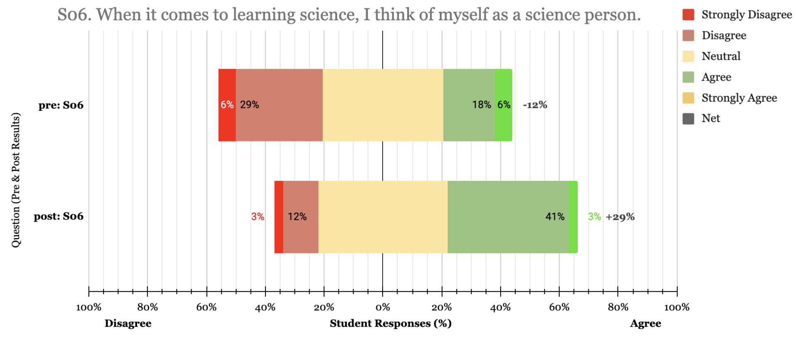
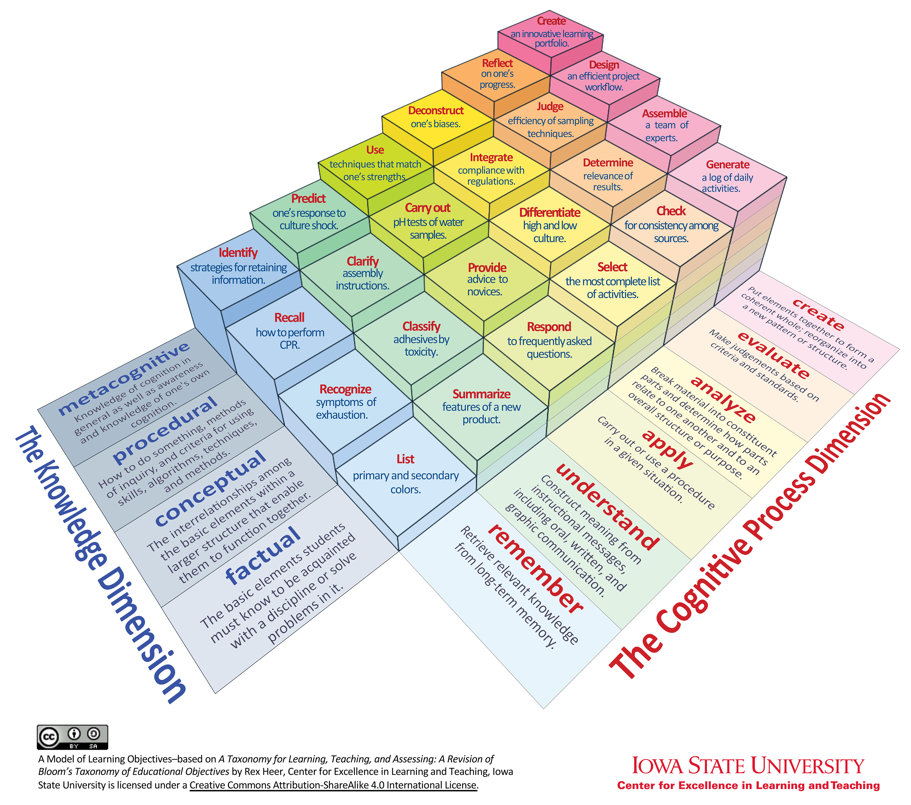

Research
Interests
Exoplanets & Brown Dwarfs
Ground-Based Observations
Current Projects
Characterizing the L–T Transition in Brown Dwarfs & Directly Imaged Exoplanets
I study the atmospheres of brown dwarfs and directly imaged exoplanets across the L–T transition, where iron and silicate clouds sink below the photosphere and methane absorption begins to appear. In preparation for SCALES integral field spectrograph at Keck, I am targeting the 3–5 µm carbon features of $\mathrm{CH_4}$ and $\mathrm{CO}$ which offer a window into the chemistry and structure of their atmospheres. I pair these observations with atmospheric models to combine clouds and vertical mixing, to learn how deep-atmosphere chemistry and dynamics shape our observations of these exciting worlds.
Advisors: Steph Sallum, Jonathan Fortney, UC Santa Cruz · 2026 – Present
Ground-Based Slitless Spectrophotometry
I am testing a low-cost, slitless spectrophotometry system on a 20" ground-based telescope to observe transiting exoplanets at multiple wavelengths simultaneously. Planning and leading observations, building Python pipelines to process slitless spectrophotometric data, and modeling noise sources and instrument efficiency to determine the achievable precision of our system.
Advisor: Zach Berta-Thompson, CU Boulder & Sommers-Bausch Observatory · 2025 – Present
Past Projects
From Bias to Belonging: Supporting Science Identity in High School Science

Designed and evaluated an inclusive physics curriculum highlighting marginalized scientists, pairing core wave concepts with the stories of overlooked figures in STEM. Evaluated its impact through mixed-methods analysis of student drawings, reflections, and identity surveys, documenting stronger science identity and sense of representation after implementation, especially among female students. Master's Capstone project.
Advisors: Will Lindsay, Ian Her Many Horses, Valerie Otero, CU Boulder · 2024
Comparative Analysis of Introductory Astronomy Labs

Compared lab assignments in CU Boulder’s introductory astronomy courses for science majors and non-majors by the types of knowledge and cognitive process each question required. Discovered that the majors’ lab more often asked students to judge evidence and develop their own ideas, the non-majors’ lab leaned on memorization, and neither asked students to reflect on how they learn. This project was a component of an undergraduate research class.
Advisors: Noah Finkelstein, Seth Hornstein, CU Boulder · 2023
Photometric Transit of Exoplanet HAT-P-53 b
Observed a transit of the hot Jupiter HAT-P-53 b and built a Python photometry pipeline that recovered its accepted transit depth and radius. This project was a component of an undergraduate research class.
Advisor: Zach Berta-Thompson, CU Boulder · 2022
Publications
- [In Preparation] Avery, J., Berta-Thompson, Z. K., Stephens, A., & Smith, R. Design Considerations for Ground-Based Slitless Spectrophotometry.
- [In Review] Berta-Thompson, Z. K., Wachiraphan, P., Stephens, A., Caradonna, M., Murray, C., Arriero, V., Avery, J., Duvvuri, G. M., & Pineda, S. (2025). exoatlas: friendly Python code for exoplanet populations. Submitted to JOSS. arXiv:2507.02210